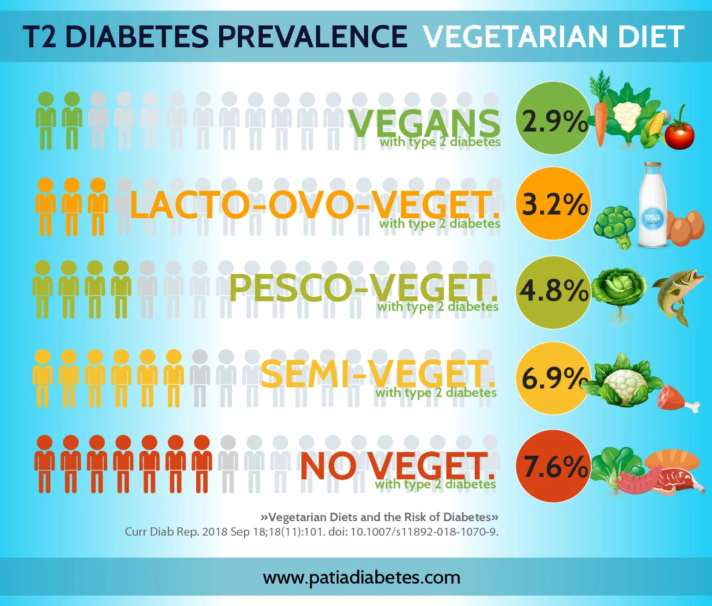
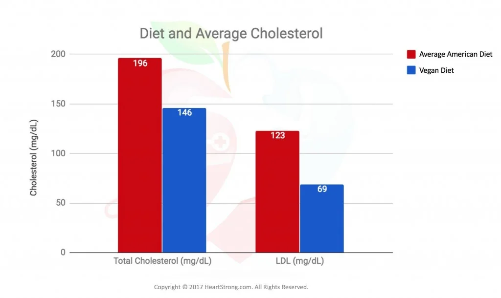

Selon une étude basée sur les statistiques mondiales de mortalité de 195 pays entre 1990 et 2017, les cinq facteurs alimentaires qui diminuent le plus l'espérance de vie en Europe et dans le monde sont:
Selon une étude menée auprès de 6 381 personnes, la prévalence du cancer est jusqu'à quatre fois plus élevée chez les personnes qui suivent un régime riche en protéines animales (plus de 20 % de l'apport calorique journalier) que chez celles qui suivent un régime pauvre en protéines animales (moins de 10 % de l'apport calorique journalier). Les mêmes effets n’ ont pas été observés avec des taux élevés de protéines végétales.
Un régime végétal est associé à des niveaux inférieurs de cholestérol et de triglycérides par rapport à un régime omnivore.
Une étude menée en Californie entre 2002 et 2007 auprès de 96 000 participants a révélé que l'espérance de vie moyenne des hommes suivant un régime 100 % végétal était supérieure de 9,5 ans à celle des hommes suivant un régime omnivore (83,3 ans contre 73,8 ans) La différence était légèrement moins marquée chez les participantes, l'espérance de vie étant supérieure de 6,1 ans chez celles qui suivaient un régime à base de plantes (85,7 contre 79,6 ans).
En utilisant les données de la même étude, l'apport en protéines des personnes suivant un régime omnivore, végétarien et végétalien a été analysé et a révélé des valeurs similaires pour les trois : 74,7, 70,6 et 70,7 grammes par jour, respectivement. Dans les trois cas, l'apport journalier recommandé de 46 g pour une femme moyenne et de 56 g pour un homme moyen est largement dépassé, ce qui dément l'idée largement répandue selon laquelle les régimes à base de plantes n'apportent pas suffisamment de protéines.
Par ailleurs, 70,6 % des omnivores avaient un indice de masse corporelle supérieur à 25, le seuil de surcharge pondérale, contre 49,7 % des végétariens et seulement 33,1 % des végétaliens.
L'Académie américaine de nutrition et de diététique, l'organisation comptant le plus grand nombre de nutritionnistes professionnels au monde, affirme que les régimes 100% végétaux conviennent à toutes les étapes de la vie, y compris l'enfance et la grossesse. D'autre part, l'American Journal of Cardiology recommande un régime 100% végétal pour prévenir l'artériosclérose et diminuer le risque de cancer et d'autres maladies chroniques.
1.Health effects of dietary risks in 195 countries, 1990-2017: a systematic analysis for the Global Burden of Disease Study 2017- Afshin et al, 2019
2.Low Protein Intake Is Associated with a Major Reduction in IGF-1, Cancer, and Overall Mortality in the 65 and Younger but Not Older Population- Levine et al. 2014
3.Vegetarian Diet and Cholesterol and Triglycerides Levels- De Biase et al, 2005
4.The Garden of Eden—plant based diets, the genetic drive to conserve cholesterol and its implications for heart disease in the 21st century- Jenkins et al, 2002
5.Vegetarian diets in the Adventist Health Study 2: a review of initial published findings- Orlich et al, 2014
6.Nutrient Profiles of Vegetarian and Non Vegetarian Dietary Patterns- Rizzo et al, 2014
7.Position of the Academy of Nutrition and Dietetics: Vegetarian Diets- Academy of Nutrition and Dietetics, 2016
8.Introduction: More Than Coronary Artery Disease- Esselstyn et al, 1998
- Petit guide d'introduction à l'alimentation végétale
- Chaîne YouTube:NutritionFacts.org
- Manger pour ne pas mourir
- How not to diet
- Becoming Vegan